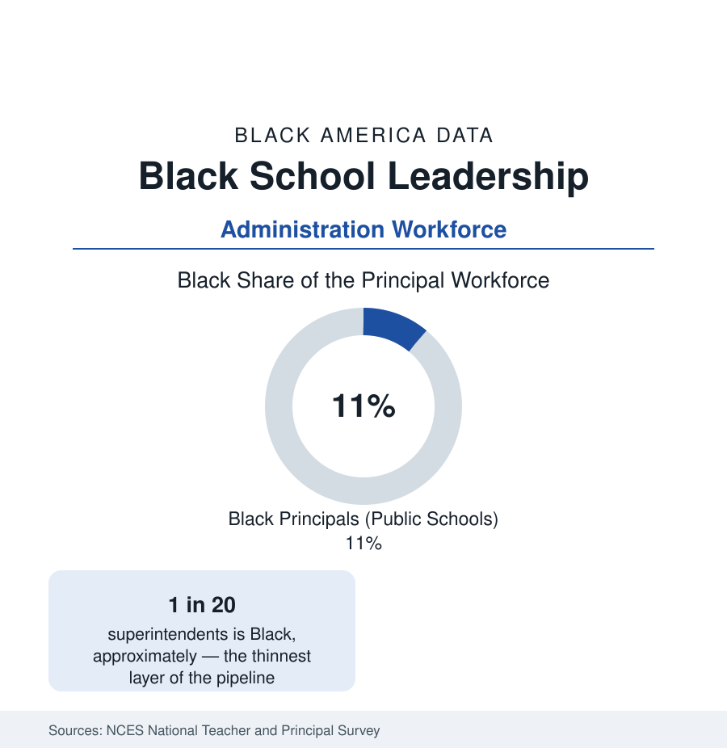

Black Education
Black Principals and School Leaders: The Administration Pipeline
About one in ten public school principals is Black — and about one in twenty superintendents — in the NCES and association workforce data. The leadership pipeline profile.

About one in ten public school principals in the United States is Black — roughly 11 percent in the federal National Teacher and Principal Survey — serving a student population that is 15 percent Black, and the share thins with every step up the ladder: assistant principals record a higher Black share, principals a lower one, and superintendents the lowest of all, at roughly one in twenty. This article reports the school leadership workforce data — the administrative layer between the teacher workforce of the earlier profile and the outcomes of the K-12 data.
The Ladder's Shape
Private and independent schools record a thinner layer still — Black heads of school form a small single-digit share in the independent-school associations' counts, concentrated in the urban day schools — while the parochial systems of the big cities, historically a significant Black education employer, have contracted with their school networks.
The pipeline's arithmetic is visible in the survey tables. Black educators form about 7 percent of teachers, a higher share of assistant principals and deans (roles weighted toward student discipline and operations, where Black administrators are disproportionately assigned in the research literature), about 11 percent of principals — the share lifted by majority-Black districts and schools, where Black leadership is the norm — and roughly 4 to 5 percent of superintendents in the association surveys. Charter schools record higher Black leadership shares than traditional districts at every level, reflecting both their urban concentration and their independent hiring. The geographic distribution is the system's: Black principals lead a large share of schools in the South and the big-city districts, and are rare in the suburban and rural districts where most American students attend.
The Research on Effects
The leadership variable matters in the outcome literature for a specific, measurable reason. Studies using state administrative data find that Black students assigned to Black principals show modest but consistent advantages on several outcomes — lower exclusionary discipline, higher gifted-program identification, higher teacher retention in the building — consistent with the teacher-match findings of the K-12 profile and operating through the whole school rather than a classroom. Principals also control the hiring pipeline: the research finds Black principals hire and retain Black teachers at higher rates, making the leadership share a driver of the teacher share over time. The effects are documented as meaningful and partial — leadership match is one variable in a system — and the reference reports them at that weight.
Pathways and Blockages
The route to the principalship runs through the master's degree in educational leadership, the assistant principalship, and district sponsorship — each stage with its own filter in the data. Black educators enter administration later on average (more classroom years first, in the survey data), are concentrated in the high-poverty schools where principal turnover is highest and tenure in role shortest, and reach the superintendency through a board-hiring process whose demographics the association studies describe as the system's least diverse gate. The preparation layer is shifting in the record: HBCU leadership programs and the urban districts' internal academies are the documented pipelines of the current generation of Black superintendents, several of whom now lead the nation's largest districts — the big-city superintendency has been the layer where Black leadership is most visible in the recent counts.
Compensation and Conditions
Principal pay in the survey data runs from the high five figures in small districts to well into six figures in large ones, with Black principals' average salaries trailing the overall average — a composition effect (district size and region) the data note rather than a within-district finding. The conditions data are the workforce's standing concern: principal turnover nationally runs near a fifth of the workforce annually in the federal series, higher in the high-poverty schools where Black principals concentrate, and the post-pandemic waves of administrator departures appear in every group's counts. The leadership pipeline's leak, in other words, is increasingly at the retention stage rather than the entry stage.
Reading the Leadership Data
One in ten principals and one in twenty superintendents, against 15 percent of students: the leadership data describe a system administered, at its top, by a workforce less representative than the one it teaches. The trend lines — rising assistant-principal shares, visible big-city superintendencies, HBCU pipeline programs — are the series to watch; the levels are the current fact.
More in Black Education
Black Educational Attainment: High School Parity, the College Gap
About 89 percent of Black adults hold a high school diploma and one in four holds a bachelor's degree or higher — the attainment ladder, the college completion gap, and the generational trend.
Historically Black Colleges and Universities: Enrollment and Degrees
More than 100 HBCUs enroll roughly 290,000 students and award about one in six Black bachelor's degrees — an outsized share from a small sector. The federal education data.
Black College Enrollment: 2.4 Million Students
About 2.4 million Black students are enrolled in American colleges — nearly two-thirds of them women. The NCES enrollment data by sector, level, and trend.
Source: National Center for Education Statistics, National Teacher and Principal Survey; AASA superintendent studies; Education Week and Learning Policy Institute leadership research.